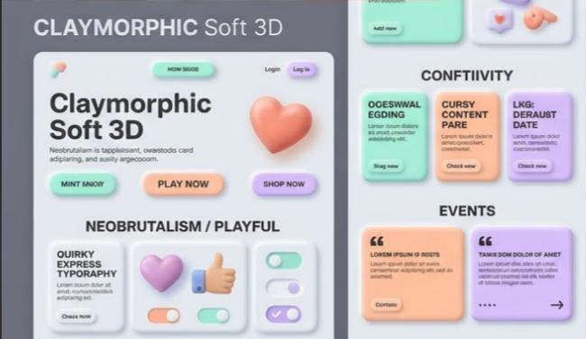

Launch Live Theme
Tactile Pastel 3D
Puffy Neumorphism
Playful App UI
Claymorphic Soft 3D
Tactile Marshmallow Depth & Playful Micro-Interactions
An evolution beyond flat design and traditional neumorphism. Employs dual-axis inset highlights and diffused soft outer drop-shadows to craft pillowy, extruded clay surfaces. Infused with pastel mint, warm peach coral, and tactile toggle buttons.
Color Palette
Typography
Fredoka & Plus Jakarta Sans (Rounded)
UI Characteristics
Multi-layer inner/outer shadows, extruded pressable pills
Best Fit For
SaaS Dashboards, EdTech Apps, Gamified Web3 Platforms